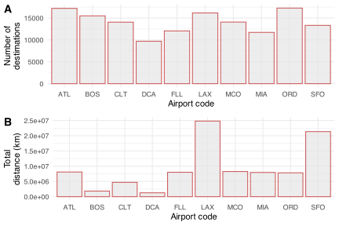
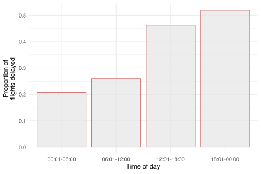
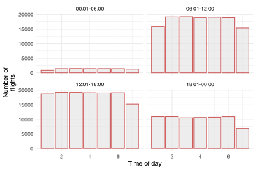
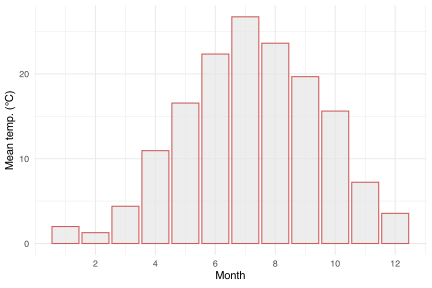
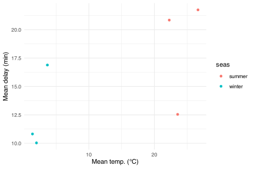

BCB744: Summative End-of-Intro-R Task
![]()
Honesty Pledge
This assignment requires that you work as an individual and not share your code, results, or discussion with your peers. Penalties and disciplinary action will apply if you are found cheating.
Copy the statement, below, into your document and replace the underscores with your name acknowledging adherence to the UWC’s Honesty Pledge.
I, ____________, hereby state that I have not communicated with or gained information in any way from my peers and that all work is my own.
Format and mode of submission
This Assignment requires submission as both a Quarto (.qmd) file and the knitted .html product. You are welcome to copy any text from here to use as headers or other pieces of informative explanation to use in your Assignment.
Style and organisation
As part of the assessment, we will look for a variety of features, including, but not limited to the following:
- Content:
- Questions answered in order
- A written explanation of approach included for each question
- Appropriate formatting of text, for example, fonts not larger than necessary, headings used properly, etc. Be sensible and tasteful.
- Code formatting:
- Use Tidyverse code
- No more than ~80 characters of code per line (pay particular attention to the comments)
- Application of R code conventions, e.g. spaces around
<-, after#, after,, etc. - New line for each
dplyrfunction (lines end in%>%) orggplotlayer (lines end in+) - Proper indentation of pipes and
ggplot()layers - All chunks labelled without spaces
- No unwanted / commented out code left behind in the document
- Figures:
- Sensible use of themes / colours
- Publication quality
- Informative and complete titles, axes labels, legends, etc.
- No redundant features or aesthetics
Packages
For this assignment, you will have to install the nycflights13 package. The package contains the dataset flights and some associated meta-data, all of which you need to complete the questions below. You will also need tidyverse and ggpubr
Questions
Question 1
Insert Task G which can be found here.
Question 2
What are the 10 most common destinations for flights from NYC airports in 2013, and what is the total distance travelled to each of these airports? Make a 2-panel figure and display these data graphically.
tab1 <- flights %>%
group_by(dest) %>%
summarise(n = n(),
total_distance = sum(distance)) %>%
arrange(desc(n)) %>%
slice(1:10)
plt1 <- ggplot(tab1) +
geom_col(aes(x = dest, y = n), fill = "grey90", alpha = 0.7,
colour = "indianred") +
theme_minimal() +
labs(x = "Airport code",
y = "Number of\ndestimations")
plt2 <- ggplot(tab1) +
geom_col(aes(x = dest, y = total_distance * 0.621371), # convert to km
fill = "grey90", alpha = 0.7, colour = "indianred") +
theme_minimal() +
labs(x = "Airport code",
y = "Total\ndistance (km)")
ggarrange(plt1, plt2, ncol = 1, labels = "AUTO")
Question 3
Which airlines have the most flights departing from NYC airports in 2013? Make a table that lists these in descending order of frequency and shows the number of flights for each airline. In your table, list the names of the airlines as well. Hint: you can use the airlines dataset to look up the airline name based on carrier code.
popular_destinations <- flights %>%
count(carrier) %>%
arrange(desc(n)) %>%
inner_join(airlines, by = "carrier") %>%
as_tibble()
head(popular_destinations, n = 16)# A tibble: 16 × 3
carrier n name
<chr> <int> <chr>
1 UA 58665 United Air Lines Inc.
2 B6 54635 JetBlue Airways
3 EV 54173 ExpressJet Airlines Inc.
4 DL 48110 Delta Air Lines Inc.
5 AA 32729 American Airlines Inc.
6 MQ 26397 Envoy Air
7 US 20536 US Airways Inc.
8 9E 18460 Endeavor Air Inc.
9 WN 12275 Southwest Airlines Co.
10 VX 5162 Virgin America
11 FL 3260 AirTran Airways Corporation
12 AS 714 Alaska Airlines Inc.
13 F9 685 Frontier Airlines Inc.
14 YV 601 Mesa Airlines Inc.
15 HA 342 Hawaiian Airlines Inc.
16 OO 32 SkyWest Airlines Inc. Question 4
Consider only flights that have non-missing arrival delay information. Your answer should include the name of the carrier in addition to the carrier code and the values asked.
Which carrier had the highest mean arrival delay?
Which carrier had the lowest mean arrival delay?
Make sure that your answer includes the name of the carrier and the calculated mean (±SD) delay times, and use a sensible number of decimal digits.
flights %>%
filter(!is.na(arr_delay)) %>%
group_by(carrier) %>%
summarise(mean_arr_delay = round(mean(arr_delay), 1),
sd_arr_delay = round(sd(arr_delay), 1)) %>%
arrange(desc(mean_arr_delay)) %>%
inner_join(airlines, by = "carrier") %>%
slice(c(1, n())) %>%
as_tibble()# A tibble: 2 × 4
carrier mean_arr_delay sd_arr_delay name
<chr> <dbl> <dbl> <chr>
1 F9 21.9 61.6 Frontier Airlines Inc.
2 AS -9.9 36.5 Alaska Airlines Inc. The longest arrival delay was on Frontier Airlines that, on average, arrived 21.9 ± 61.5 (mean ± SD) minutes late. On the contrary, Alaska Airlines typically arrived earlier than anticipated by 9.9 ± 36.5 (mean ± SD) minutes.
Question 5
What were the mean values for the weather variables at the origin airport on the top 10 days with the highest departure delays? Contrast this with a similar view on the 10 days with the lowest departure delays. Your table(s) should include the names of origin airports, the dates with the highest (lowest) departure delays, and the mean (±SD) weather variables on these days.
Can you make any inferences about the effect of weather conditions on flight delays? Are there any problems with this analysis, and how might you improve this analysis for a clearer view of the effect of weather conditions on the ability of flights to depart on time?
top_delay <- bind_rows(
flights %>% slice_max(order_by = dep_delay, n = 10),
flights %>% slice_min(order_by = dep_delay, n = 10),
) %>%
select(carrier, flight, tailnum, dep_delay, month, day, origin) %>%
inner_join(weather, by = c("origin", "month", "day")) %>%
pivot_longer(cols = temp:visib,
names_to = "weather_var",
values_to = "value") %>%
na.omit() %>%
group_by(carrier, flight, tailnum, dep_delay, weather_var) %>%
summarise(mean_weather_var = round(mean(value, na.rm = TRUE), ),
sd_weather_var = round(sd(value, na.rm = TRUE), 1)) %>%
unite("mean_sd", mean_weather_var:sd_weather_var, sep = " ± ") %>%
arrange(desc(dep_delay)) %>%
pivot_wider(names_from = weather_var, values_from = mean_sd) %>%
as_tibble()
top_delay# A tibble: 22 × 13
carrier flight tailnum dep_delay dewp humid precip pressure temp visib
<chr> <int> <chr> <dbl> <chr> <chr> <chr> <chr> <chr> <chr>
1 HA 51 N384HA 1301 35 ± 2.7 74 ± 1… 0 ± 0 1026 ± … 43 ±… 10 ±…
2 MQ 3535 N504MQ 1137 53 ± 4.5 57 ± 1… 0 ± 0 1014 ± … 71 ±… 10 ±…
3 MQ 3695 N517MQ 1126 24 ± 2.8 48 ± 1… 0 ± 0 1031 ± … 44 ±… 10 ±…
4 AA 177 N338AA 1014 57 ± 2.1 73 ± 1… 0 ± 0 1018 ± 1 66 ±… 10 ±…
5 MQ 3075 N665MQ 1005 73 ± 1.2 83 ± 1… 0 ± 0 1013 ± … 79 ±… 9 ± 1
6 DL 2391 N959DL 960 47 ± 2.8 68 ± 1… 0 ± 0 1013 ± … 58 ±… 10 ±…
7 DL 2119 N927DA 911 17 ± 5.2 50 ± 14 0 ± 0 1020 ± 4 35 ±… 10 ±…
8 DL 2007 N3762Y 899 70 ± 1.1 83 ± 9 0 ± 0 1008 ± … 76 ±… 9 ± …
9 DL 2047 N6716C 898 72 ± 1.4 84 ± 3… 0 ± 0 1012 ± … 77 ±… 9 ± …
10 AA 172 N5DMAA 896 51 ± 3.9 93 ± 6… 0 ± 0 1016 ± … 54 ±… 3 ± …
# ℹ 12 more rows
# ℹ 3 more variables: wind_dir <chr>, wind_speed <chr>, wind_gust <chr>Nothing obvious I can see about the effect of weather variables in affecting the departure delay. We would need to do some multivariate stats to assess.
Question 6
Partition each day into four equal time intervals, e.g. 00:01-06:00, 06:01-12:00, 12:01-18:00, and 18:01-00:00.
- At each time interval, what is the proportion of flights delayed at departure? Illustrate your finding in a figure.
# Create time of day variable
flights_tod <- flights %>%
mutate(time_of_day = case_when(
sched_dep_time >= 001 & sched_dep_time <= 600 ~ "00:01-06:00",
sched_dep_time >= 601 & sched_dep_time <= 1200 ~ "06:01-12:00",
sched_dep_time >= 1201 & sched_dep_time <= 1800 ~ "12:01-18:00",
sched_dep_time >= 1801 ~ "18:01-00:00"
)) %>%
mutate(day_of_week = wday(time_hour))
# Find proportion of delayed flights for each time of day
delay_time <- flights_tod %>%
filter(!is.na(dep_delay)) %>%
mutate(dep_delayed = ifelse(dep_delay > 0, "delayed", "ontime")) %>%
count(time_of_day, dep_delayed) %>%
group_by(time_of_day) %>%
mutate(prop_delayed = n / sum(n)) %>%
filter(dep_delayed == "delayed") %>%
arrange(prop_delayed) %>%
as_tibble()
head(delay_time)# A tibble: 4 × 4
time_of_day dep_delayed n prop_delayed
<chr> <chr> <int> <dbl>
1 00:01-06:00 delayed 1819 0.207
2 06:01-12:00 delayed 32466 0.260
3 12:01-18:00 delayed 58325 0.463
4 18:01-00:00 delayed 35822 0.520ggplot(delay_time, aes(x = time_of_day, y = prop_delayed)) +
geom_col(fill = "grey90", alpha = 0.7, colour = "indianred") +
theme_minimal() +
labs(x = "Time of day",
y = "Proportion of\nflights delayed")
About 21% of flights are delayed between midnight and 6:00, 26% are delayed between 6:00-12:00, 46% delays between 12:00-18:00, and 52% delays between 18:00pm and midnight. As the day progresses, the better the chance is of there being a delay.
- Based on your analysis, does the chance of being delayed change throughout the day?
See answer to Q.6a.
- For each weekday (1-7) aggregated over 2013, which of the time intervals has the most flights? Create a figure to show your finding.
flights_tod %>%
group_by(time_of_day, day_of_week) %>%
summarise(n_flights = n()) %>%
ggplot(aes(x = day_of_week, y = n_flights)) +
geom_col(fill = "grey90", alpha = 0.7, colour = "indianred") +
theme_minimal() +
labs(x = "Time of day",
y = "Number of\nflights") +
facet_wrap(~time_of_day)
Midnight to 6-am has the fewest flights, regardless of what day of the week we are looking at – although Sundays (day 1) and Saturday (day 7) have slightly fewer flights. Similarly, Sun?Sat have slightly fewer flights between 6-am to 6-pm, although the total number of flights are much higher (closer to 20000 flights per day). Evenings from 6-pm to midnight the flights decrease in numbers, and Saturdays have fewer flights during this time than other days.
Question 7
Find the 10 planes that spend the longest time (cumulatively) in the air.
- For each model, what are the cumulative and mean flight times? In this table, also mention their type, manufacturer, model, number of engines, and speed.
cum_flights <- flights %>%
group_by(tailnum) %>%
summarise(cum_air_time = sum(air_time),
mean_air_time = round(mean(air_time, na.rm = TRUE), 1)) %>%
slice_max(order_by = cum_air_time, n = 10) %>%
inner_join(planes, by = "tailnum") %>%
select(tailnum, cum_air_time, mean_air_time, type, manufacturer, model, engines, speed) %>%
as_tibble()
head(cum_flights)# A tibble: 6 × 8
tailnum cum_air_time mean_air_time type manufacturer model engines speed
<chr> <dbl> <dbl> <chr> <chr> <chr> <int> <int>
1 N502UA 97320 340. Fixed win… BOEING 757-… 2 NA
2 N512UA 95943 341. Fixed win… BOEING 757-… 2 NA
3 N505UA 95591 339 Fixed win… BOEING 757-… 2 NA
4 N557UA 87371 337. Fixed win… BOEING 757-… 2 NA
5 N518UA 80772 341. Fixed win… BOEING 757-… 2 NA
6 N508UA 79998 336. Fixed win… BOEING 757-… 2 NA- Create a table that lists, for each air-plane identified in (a.), each flight (and associated destination) that it undertook during 2013.
flight_dest <- flights %>%
filter(tailnum %in% cum_flights$tailnum) %>%
select(tailnum, origin, dest, time_hour) %>%
as_tibble()
head(flight_dest)# A tibble: 6 × 4
tailnum origin dest time_hour
<chr> <chr> <chr> <dttm>
1 N518UA JFK LAX 2013-01-01 11:00:00
2 N502UA JFK SFO 2013-01-01 14:00:00
3 N512UA JFK LAX 2013-01-01 15:00:00
4 N557UA JFK SFO 2013-01-01 17:00:00
5 N508UA JFK SFO 2013-01-01 18:00:00
6 N591JB JFK PSE 2013-01-01 23:00:00- Summarise all the in formation in (b.) on a map of the USA. Use lines to connect departure and destination locations (each labelled). Different facets in the figure must be used for each of the 10 planes. You can use the
alphavalue in ggplot2 such that the colour intensity of overlapping flight lines is proportional to the number of flights taken along the path. For bonus marks, ensure that the curvature of Earth is indicated in the flight lines. Hint: such lines would display as curves, not straight lines.
# to be done in due course...Question 8
Limit this analysis to only the coldest three winter and warmest three summer months (show evidence for how this is decided). For each of these two seasons, create a visualisation to explore if there is a relationship between the mean daily departure delay and the mean daily temperature. Be as economical with your code as possible.
Discuss your answer.
seas <- weather %>%
group_by(month) %>%
summarise(mean_temp = round(mean(temp, na.rm = TRUE), 1)) %>%
as_tibble()
seas# A tibble: 12 × 2
month mean_temp
<int> <dbl>
1 1 35.6
2 2 34.3
3 3 39.9
4 4 51.7
5 5 61.8
6 6 72.2
7 7 80.1
8 8 74.5
9 9 67.4
10 10 60.1
11 11 45
12 12 38.4ggplot(seas, aes(x = month, y = (mean_temp - 32)*5/9)) +
geom_col(fill = "grey90", alpha = 0.7, colour = "indianred") +
scale_x_continuous(breaks = seq(2, 12, by = 2)) +
theme_minimal() +
labs(x = "Month",
y = "Mean temp. (°C)")
The coldest months are December, January, and February. The warmest time of year is during June, July, August.
flights %>%
filter(month %in% c(12, 1, 2, 6, 7, 8)) %>%
inner_join(weather, by = c("origin", "month", "day")) %>%
group_by(month) %>%
summarise(mean_dep_delay = mean(dep_delay, na.rm = TRUE),
mean_temp = round(mean(temp, na.rm = TRUE), 1)) %>%
mutate(seas = c("winter", "winter", "summer", "summer", "summer", "winter")) %>%
ggplot(aes(x = (mean_temp - 32)*5/9, y = mean_dep_delay)) +
geom_point(aes(col = seas)) +
theme_minimal() +
labs(x = "Mean temp. (°C)", y = "Mean delay (min)")
It seems that, in general, shorter delays are experienced during winter months. To fully assess the effect of weather variables on delays, a more detailed statistical analysis will be required.
Submission instructions
Submit your .qmd and .html files wherein you provide answers to these Questions by no later than 1 March 2023 at 23:59.
Label the files as follows:
BCB744_<first_name>_<last_name>_Final.qmd, andBCB744_<first_name>_<last_name>_Final.html
(the < and > must be omitted as they are used in the example as field indicators only).
Failing to follow these instructions carefully, precisely, and thoroughly will cause you to lose marks, which could cause a significant drop in your score as formatting counts for 15% of the final mark (out of 100%).
Submit your Tasks on the Google Form when ready.
Reuse
Citation
@online{smit,
author = {Smit, AJ},
title = {BCB744: {Summative} {End-of-Intro-R} {Task}},
date = {},
url = {https://tangledbank.netlify.app/assessments/Intro-R_CA_Summative Tasks.html},
langid = {en}
}